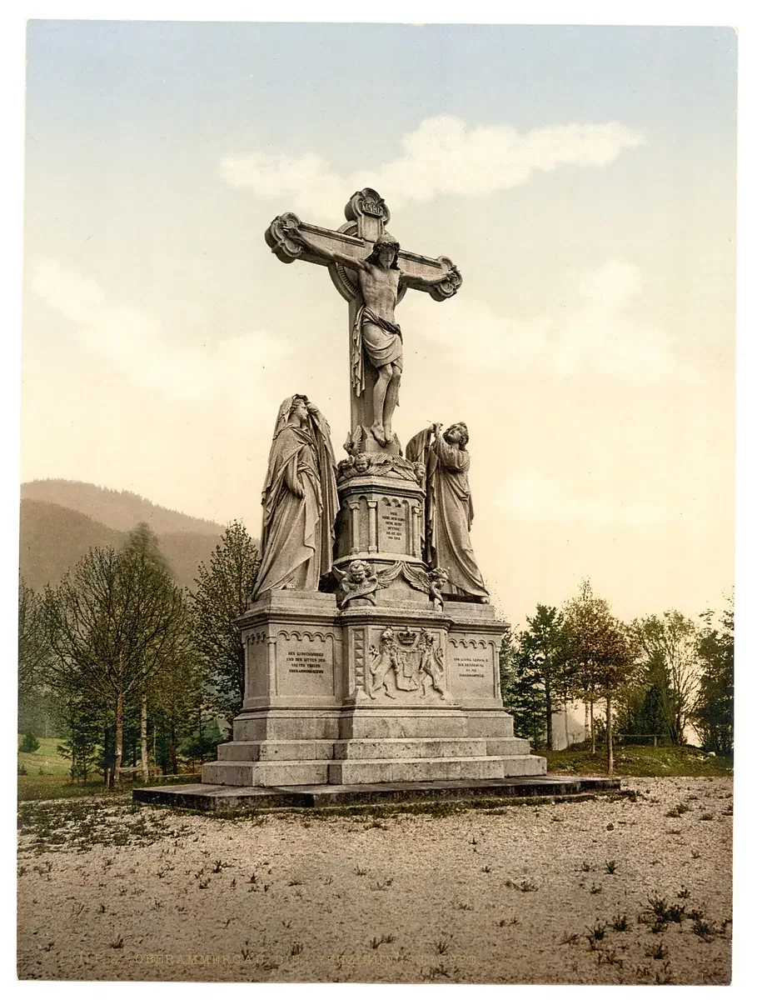
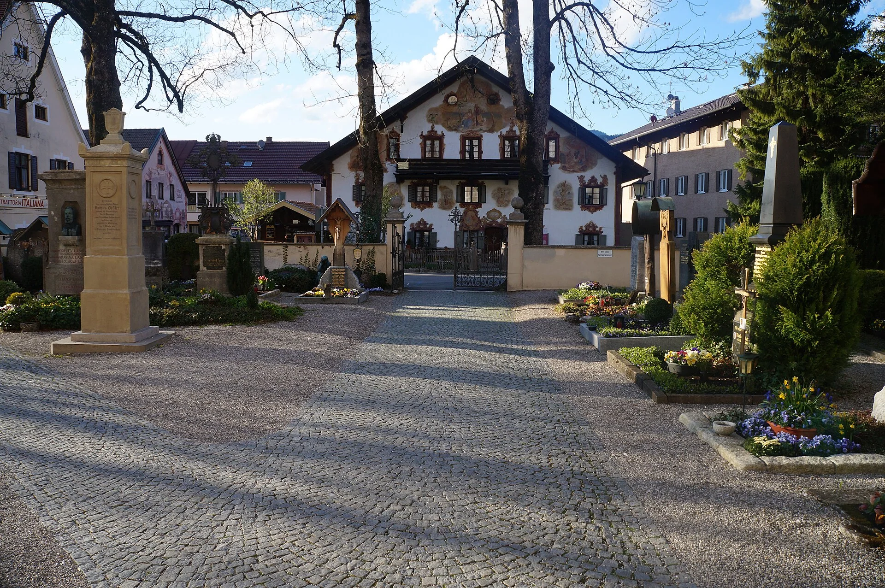
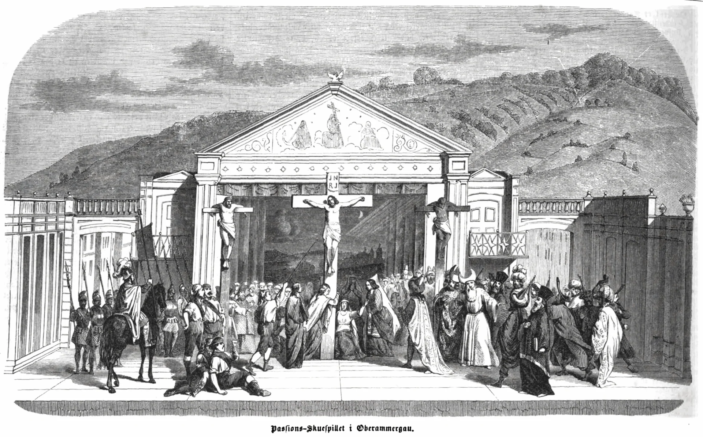
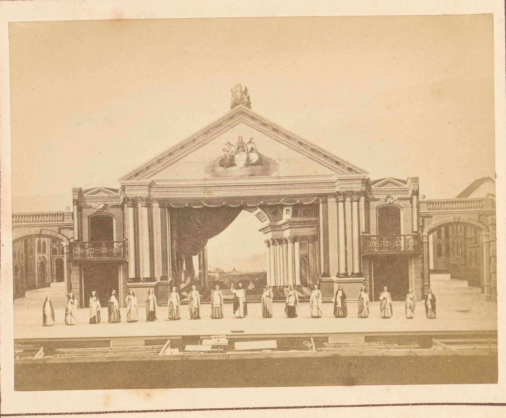
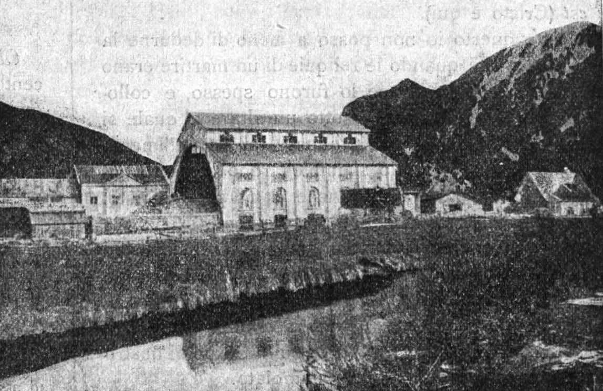
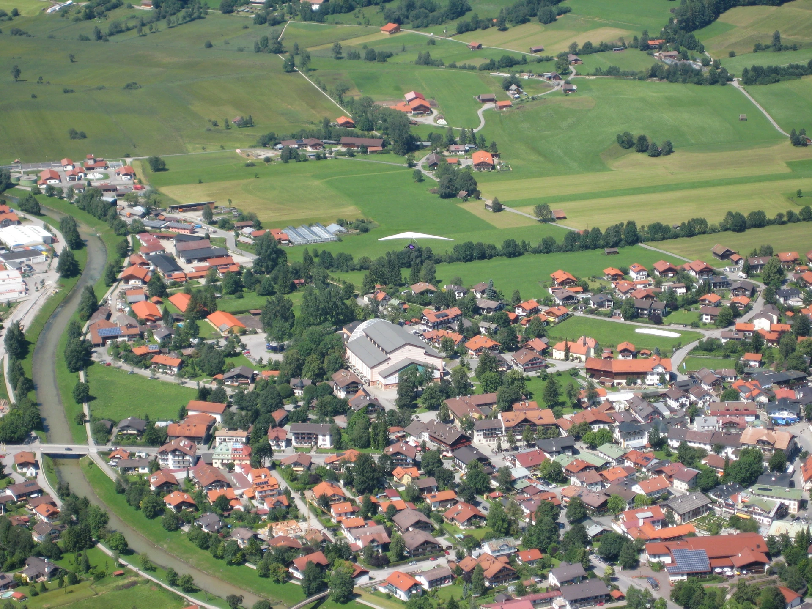

아직 펼치지 않은 카드거리로 나온 성주간 · 5오버아머가우 수난극흑사병이 돌던 1633년, 알프스 기슭의 한 마을이 하나님께 약속을 했어요. 어떤 약속이었을까요?온 마을이 400년 동안 지킨 약속이 있대!
1634년부터 10년마다독일 바이에른 오버아머가우 · 묘지에서 산 아래 극장까지
오버아머가우 수난극
1634년 오버아머가우의 첫 수난극은 흑사병으로 숨진 사람들의 무덤 위에서 열렸어요. 1830년부터는 마을 북쪽 끝 같은 자리에서 열리며, 무대는 하늘 아래에서 철골 지붕 아래로 바뀌어 왔어요. 시간 막대를 밀어 같은 자리의 네 때를 지나가 보세요.
묘지에서 시작한 연극이 커다란 극장이 되었대. 시간 막대를 밀어 볼까?
검수 전 시안이에요(기준서 2판). 장면에는 오버아머가우 수난극 공식 누리집과 암머가우 알프스 관광청, 신문 기사에 있는 것만 옮겼고, 마을에 전해지는 이야기는 그렇다고 밝혔어요. 상상은 ‘눈 감고 상상해 보기’에만 썼어요.
시안 확인용카드 단계 미리 보기
1
묘지 위의 첫 무대
1634년 성령강림절, 첫 수난극은 마을 성당 옆 묘지에서 열렸어요. 흑사병으로 숨진 사람들의 새 무덤 위에, 나무로 짠 소박한 무대를 세웠어요. 수난극은 1820년까지 이 묘지에서 열렸어요.
지금 남아 있는 가장 오래된 대본은 1662~1664년에 마을 학교 선생 게오르크 카이저가 옮겨 적은 것이에요. 1674년 마을은 10년 단위의 해에 맞춰 공연하기로 했고, 1680년이 그 첫 해가 되었어요.

“이날부터 단 한 사람도 죽지 않았어요. 아직 흑사병의 흔적이 남은 사람이 많았는데도요.”
다이젠베르거 신부가 마을 연대기에 적은 말(공식 누리집이 옮겨 실음) · 마을에 전해지는 이야기 · 이 안내서가 옮김
사진은 2016년, 오버아머가우 성 베드로·바오로 성당의 묘지예요. 돌길 양쪽에 비석과 나무 십자가, 꽃을 심은 무덤이 있고, 문 너머로 벽에 그림을 그린 집이 보여요.
첫 연극은 마을 묘지 위에서 했대.
물어보기사진에서 나무 십자가를 찾아볼래?
2
같은 자리, 바뀌어 온 무대
1830년, 바이에른 왕 루트비히 1세는 무대를 묘지에서 마을 북쪽 끝으로 옮기는 조건으로 공연을 허락했어요. 그 뒤로 수난극은 지금 극장이 선 그 자리에서 열려요.
시간 막대를 밀어, 같은 자리의 무대가 어떻게 바뀌어 왔는지 지나가 보세요. 그림마다 보는 방향은 달라요.
시간 막대를 밀거나 해를 눌러, 1830년부터 수난극이 열린 같은 자리의 네 때를 지나가 보세요.




1860년 · 덴마크 잡지 「일루스트레레트 티덴데」에 실린 수난극 · 1860년 8월 19일 · 그림: 그린 이 모름(1860) · 퍼블릭 도메인 · 위키미디어 공용1871년 · 「무대와 합창단」 · 1871년 공연을 다룬 책(1872)에 실린 사진 · 사진: 요제프 알베르트(그림을 찍음) · 퍼블릭 도메인 · 위키미디어 공용(레이크스 미술관) · 책 쪽에서 사진 부분만 잘라 씀1910년 무렵 · 오버아머가우 극장 · 1910년 이전(이탈리아 잡지 「일 부온 쿠오레」 1910년) · 사진: 찍은 이 모름 · 퍼블릭 도메인 · 위키미디어 공용2009년 · 코펠산에서 내려다본 오버아머가우와 수난극 극장(가운데 큰 회색 지붕) · 2009년 7월 · 사진: 0n3 70uch · CC BY 3.0 · 위키미디어 공용
1860년의 열린 무대에서 오늘의 극장까지, 같은 자리를 지나왔어요. 무대 위 지붕은 움직여서, 하늘 아래 무대의 느낌을 지켜요.
시간 막대를 밀면, 옛날 무대가 오늘 극장으로 바뀌어!
물어보기옛날 무대 뒤로 보이던 언덕을 찾아볼래?
3
왕이 남긴 십자가
1871년 9월 25일, 바이에른 왕 루트비히 2세가 특별 공연을 보았어요. 그 뒤 왕은 마을에 커다란 십자가상을 선물했어요. 십자가상은 1875년 8월 15일에 마을에 닿았고, 그해 10월 15일에 축복식을 했어요.
사진은 1890~1900년 무렵, 흑백 사진에 색을 입혀 찍은 그 십자가상이에요. 이 무렵 수난극은 크게 이름이 나서, 1880년에는 관객이 10만 명쯤 되었고 작곡가 안톤 브루크너도 보러 왔어요.
왕이 연극을 보고 커다란 십자가를 선물했대.
물어보기십자가 아래에 몇 사람이 서 있을까?
4
고쳐 가며 지켜 온 약속
1990년, 젊은 연출가 크리스티안 슈튀클과 오토 후버가 수난극을 뿌리부터 고치기 시작했어요. 같은 해 3월, 뮌헨 고등법원은 결혼한 여성과 서른다섯 살이 넘은 여성은 무대에 설 수 없다는 규칙을 없앴어요.
1999년 극장을 크게 고쳐 다시 문을 연 날, 마을은 흑사병 서약을 새로 했어요. 이듬해 2000년에는 1860년 뒤로 가장 큰 대본 고침이 있었고, 무슬림 주민이 처음으로 함께했어요.
2022년에는 5월 14일부터 10월 2일까지 110번 공연했어요. 41만 2천 명이 넘는 관객이 왔고, 마을 사람 1,800명 가까이가 함께했어요.
여자 어른도, 다른 종교를 믿는 이웃도 함께 무대에 서게 되었대.
물어보기모두가 함께하려면 무엇을 고쳐야 했을까?
눈 감고 상상해 보기
코펠산 쪽에서 서늘한 바람이 무대로 불어와요. 어깨까지 머리를 기른 이웃들이 줄지어 무대에 서요. 첫 노래가 울리자, 수천 명의 객석이 조용해져요.
눈을 감아 봐. 산바람이 불어. 머리를 길게 기른 이웃들이 무대에 서.
나의 자리
힘든 때 한 약속을, 상황이 나아진 뒤에도 지켜 본 적이 있나요?
친구와 한 약속 중에 꼭 지키고 싶은 건 뭐야?
마음에 닿는 한 줄을 고르거나 직접 써 보세요. 한 줄을 남기면 이 자리의 도장이 찍혀요. 이 기기에만 저장돼요.
더 깊이
궁금한 칸만 펼쳐 읽어도 괜찮아요.
알고 보면
머리와 수염 명령 공연 전해의 재의 수요일, 연출가와 시장이 극장 앞에 ‘머리와 수염을 기르라’는 알림을 붙여요. 2021년에는 2월 17일 아침이었어요. 무대에 서는 마을 사람 2,500명쯤, 곧 주민의 절반 가까이가 그날부터 머리를 기르고, 남자는 수염도 길러요. 로마 군인 역과 연주자, 무대 뒤 일꾼은 짧은 머리로 함께해도 돼요.
움직이는 지붕 2010년 공연에 맞춰, 열려 있던 무대 위에 움직이는 지붕을 얹었어요. 날씨로부터 배우와 악단을 지키면서도, 하늘 아래 무대의 느낌은 남기려는 것이에요. 관객석의 여섯 철골 아치는 1900년 그대로예요.
왕의 십자가 루트비히 2세가 보낸 십자가상은 1875년부터 마을에 서 있어요. 이 카드 앞면 그림이 바로 그 십자가상이에요.
기록마다 다른 점
움직이는 지붕은 언제 공식 누리집의 역사와 암머가우 알프스 관광청은 2010년이라 하고, 같은 누리집의 다른 글은 2009년이라고 적어요. 2010년 공연에 맞춰 지은 것으로 보여요.
1930년의 자리 수 1930년 새 무대를 열 때의 객석을 공식 역사와 관광청은 5,200석, 공식 누리집의 다른 글은 5,208석이라고 적어요.
직접 가 보기
확인한 날 · 2026년 11월 18일 · 바뀌기 쉬운 정보라 정기적으로 다시 확인해요
다음 공연은 2030년 5월 18일부터 10월 6일까지예요(공식 누리집). 공연이 없는 해에도 극장을 가이드 투어로 둘러볼 수 있어요. 독일어와 영어로 하고, 45분쯤 걸려요(암머가우 알프스 관광청). 첫 무대가 섰던 성 베드로·바오로 성당 묘지도 마을 안에 있어요.
네 때 지나오기 금박
시간 막대를 밀어 무대의 네 때를 모두 지나오면 카드에 금박이 입혀져요.
시간 막대로 네 때를 다 지나오기
아이와 함께 채색
아이와 함께 ‘영화처럼 보기’를 끝까지 보면 카드가 채색돼요.
아이와 함께 ‘영화처럼 보기’를 끝까지 보기
근거 보기 (7)
- 오버아머가우 수난극 공식 누리집 「역사」(1634~1890): 1633년 서약, 1634년 성령강림절 묘지 위 첫 무대, 다이젠베르거 신부의 연대기 인용, 1662~1664년 게오르크 카이저의 대본, 1674년 10년 단위 결정, 1680년, 1820년 묘지의 마지막 공연, 1830년 루트비히 1세의 조건(마을 북쪽 끝), 1870~1871년 전쟁으로 멈춤, 1871년 9월 25일 루트비히 2세 특별 공연과 십자가상(1875년 8월 15일 도착 · 10월 15일 축복), 1880년 약 10만 명과 브루크너, 1890년 라우텐슐레거의 새 무대
- 공식 누리집 「역사」(1900~2022): 1900년 여섯 높은 철골 들보의 객석 4,200석, 1930년 새 무대와 5,200석, 1990년 슈튀클·후버의 개혁과 뮌헨 고등법원 판결(결혼한 여성 · 35세 넘은 여성), 2000년 1860년 뒤 가장 큰 대본 고침과 무슬림 주민의 첫 참여, 2010년 움직이는 무대 지붕, 2022년 5월 14일~10월 2일 110회 · 41만 2천여 명 · 마을 사람 1,800명 가까이, 2030년 5월 18일~10월 6일
- 공식 누리집 글 「수난극이 열린 곳」(2019년 4월 6일): 성당 옆 묘지의 소박한 나무 무대, 1830년 지금 극장 자리로, 1890년 객석에 처음 지붕 일부, 1900년 석 달 반 만에 4,200석, 1930년 4월 27일 새 극장 · 5,208석, 2009년 움직이는 지붕
- 암머가우 알프스 관광청: 수난극 극장 — 1634년 마을 묘지, 1830년 지금 자리, 1900년 여섯 높은 아치의 철골(지금도 남음), 1930년 게오르크 요한 랑·라이문트 랑의 새 무대와 5,200석, 1998~1999년 고침, 1999년 9월 26일 다시 열며 흑사병 서약을 새로 함, 지붕 아래 4,383석, 2010년 움직이는 무대 지붕, 45분 투어(독일어·영어)
- 존탁스블라트: 오버아머가우 수난극 배경 — 공연 전해 재의 수요일의 ‘머리와 수염 명령’
- dpa(티 온라인 2021년 2월 17일): 슈튀클 연출가와 뢰들 시장이 재의 수요일 아침 극장 앞에 명령을 붙임, 약 2,500명 · 주민의 절반 가까이, 로마 군인·연주자·무대 뒤 일꾼은 짧은 머리 가능
- 위키미디어 공용: 「일루스트레레트 티덴데」 1860년 8월 19일 386쪽 그림 · 레이크스 미술관 RP-F-2001-7-551-1(1871~1872, 요제프 알베르트) · 「일 부온 쿠오레」 1910년 24호 · 2009년 코펠산에서 본 극장 · 2016년 성 베드로·바오로 성당 묘지
그림·사진·소리 출처
- 사진: Pierre André · CC BY-SA 4.0 · 위키미디어 공용
- 그림: 그린 이 모름(1860) · 퍼블릭 도메인 · 위키미디어 공용
- 사진: 요제프 알베르트(그림을 찍음) · 퍼블릭 도메인 · 위키미디어 공용(레이크스 미술관) · 책 쪽에서 사진 부분만 잘라 씀
- 사진: 찍은 이 모름 · 퍼블릭 도메인 · 위키미디어 공용
- 사진: 0n3 70uch · CC BY 3.0 · 위키미디어 공용
- 공연 사진이 아니라, 1871년 수난극을 보고 감동한 바이에른 왕 루트비히 2세가 마을에 선물한 십자가상이에요(1890~1900년 무렵 색을 입혀 찍은 포토크롬) · 자료: 미국 의회도서관 포토크롬 모음 · 퍼블릭 도메인 · 위키미디어 공용
‘처음 만나는 기독교 문화’의 깊은 카드예요. 카드 단계와 남긴 글은 이 기기에만 저장돼요.